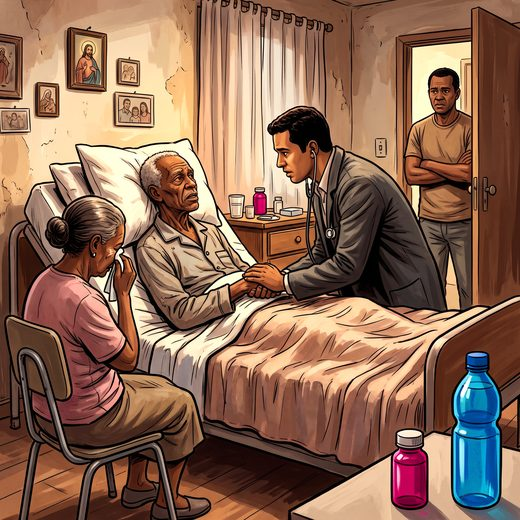

Consulta rápida à beira do leito
Condutas, doses e interações.
Referências da aula · 7
- Chang YK, Philip J, van der Steen JT, et al. Referral criteria for specialist palliative care for patients with dementia: an international Delphi consensus. JAMA Netw Open. 2025;8(5):e2510298. doi:10.1001/jamanetworkopen.2025.10298.DOI
- Conselho Federal de Medicina. Código de Ética Médica: Resolução CFM nº 2.217, de 27 de setembro de 2018. Brasília: CFM; 2019.
- Conselho Federal de Medicina. Resolução CFM nº 1.805, de 9 de novembro de 2006. Brasília: CFM; 2006.
- Brasil. Decreto-Lei nº 2.848, de 7 de dezembro de 1940 (Código Penal), arts. 121 e 122; Lei nº 13.968, de 26 de dezembro de 2019.
- Martin LM. Eutanásia e distanásia. In: Costa SIF, Oselka G, Garrafa V, organizadores. Iniciação à bioética. Brasília: Conselho Federal de Medicina; 1998.
- Beauchamp TL, Childress JF. Principles of Biomedical Ethics. 8th ed. New York: Oxford University Press; 2019.
- Monforte-Royo C, Villavicencio-Chávez C, Tomás-Sábado J, Mahtani-Chugani V, Balaguer A. What lies behind the wish to hasten death? A systematic review and meta-ethnography from the perspective of patients. PLoS One. 2012;7(5):e37117. PMID 22606338. doi:10.1371/journal.pone.0037117.PubMedDOI
Documentos oficiais
Leis e publicações do Ministério da Saúde sobre o cuidado da pessoa idosa, de acesso livre.
Abrir os documentos